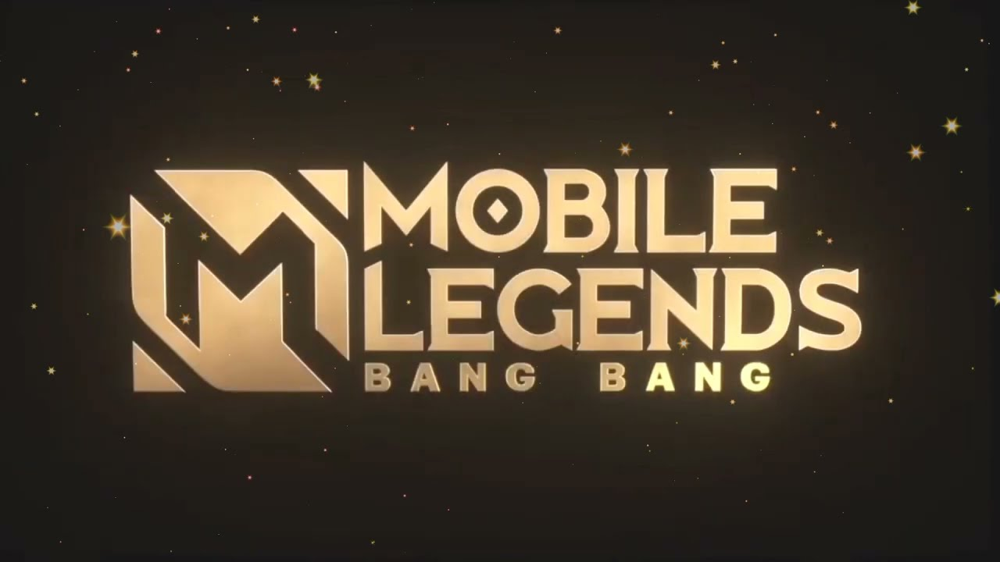

Yo de aqui 1 año me veo entrando a la universidad para poder ejercer mi carrera que tengo en mente hasta una mitad luego pienso congelarle y poder entrar al cuartel durante un año y poder aprender los diferentes oficios que me van a enseñar durante todo el transcurso que voy a estar en el cuartel encerrado, despues de salir pienso continuar con mi carrera hasta podr lograrlo posibemente dure aproximadamentre unos 5 años luego de eso pienso estudiar otra carrera como segunda occion aparte de la primera y asi salir esa carrera tambien y buscar trabajo....

Mobile Legends es un juego que todo gamer anela, todos los jugadores que se desempeñan en varios juegos se descargan para poder llegar al rango mas soñado que es mitico inmortal, al comienzo el rango que todo jugador tiene que atravesar en su camido de gamer es epico, este juego es muy maravilloso para cada jugador ya que este mismo te hace querer al juego y al mimo momento odiarlo haha...... hast dak hanabi no sirve.
Ahi se como un jugador esta perdiendo la cabeza porque su querido emparejamiento no le ayuda en nada y todo esto puede causar una ansiedad hacia la persona